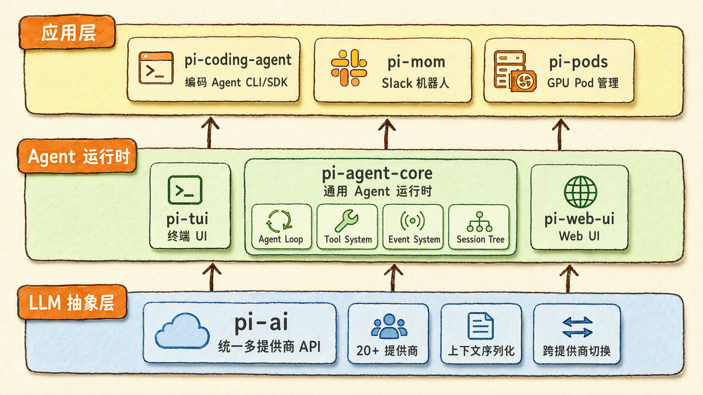
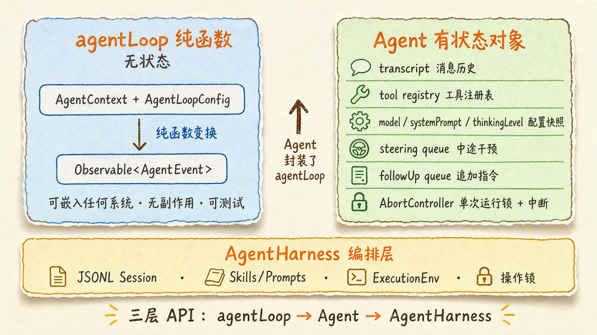
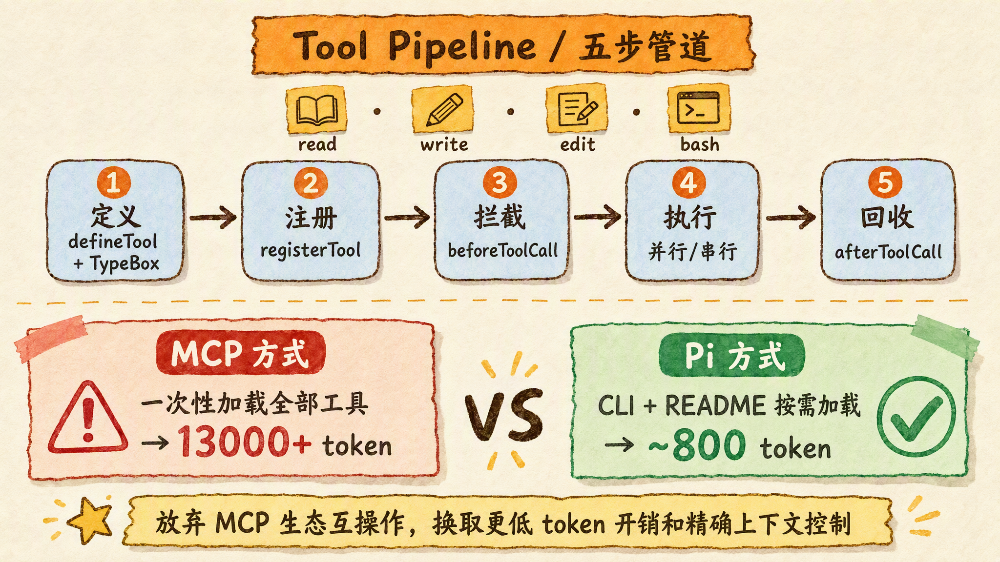
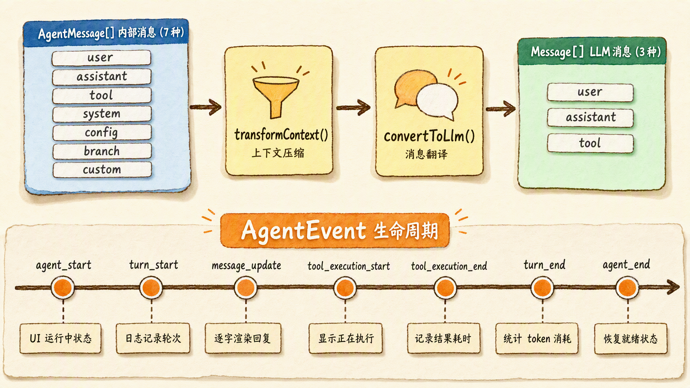
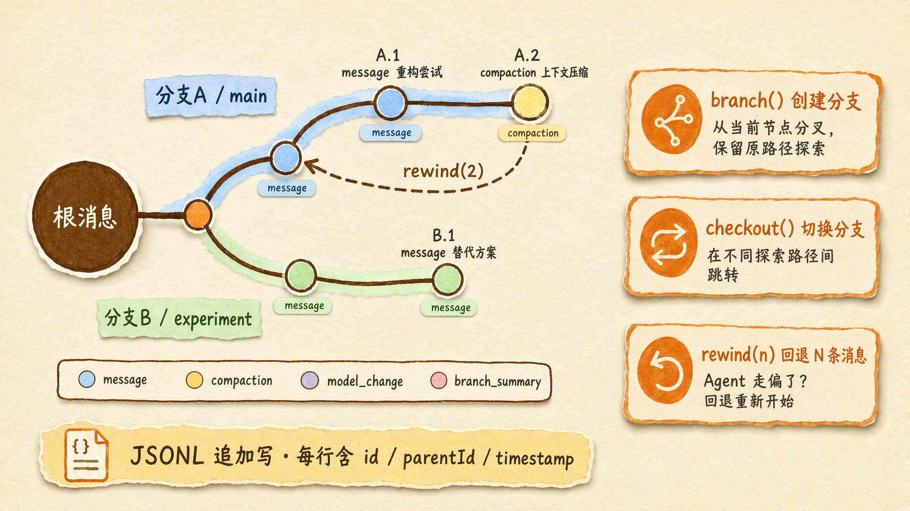

如果你只用过 Claude Code 或 Cursor，你可能从未想过一个问题：这些 AI 编码助手的”发动机”长什么样？Pi Agent 把这台发动机拆开来给你看——而且它的设计决策，每一个都有清晰的理由。
2025 年到 2026 年，AI 编码助手已经多到让人脸盲。Claude Code、Cursor、Cline、Codex、Devin——名字列出来能占满手机屏幕。但有一个问题很少被认真讨论：如果你想自己造一个，你该从哪开始？
大多数人对这个问题的第一反应是：调 API 嘛，一个 while 循环加上 tool calling，半天就能跑起来。
这个直觉不算错——一个能跑的最简 Agent 确实只需要几十行代码。但”能跑”和”能上线”之间，隔着一整套工程问题：工具调用失败了怎么恢复？对话历史怎么压缩？用户中途要打断怎么办？怎么支持模型热切换？怎么让前端 UI 实时看到 Agent 的内部状态？
这些问题，每个造过 Agent 系统的团队都遇到过。而且大多数团队的回答是：自己写。因为很长一段时间里，市面上没有一个开源的、生产级的、设计清晰的 Agent 运行时参考实现。
Pi Agent 的出现改变了这件事。
Pi Agent 是什么
Pi Agent 是一个 MIT 协议开源（GitHub: badlogic/pi-mono）的 Agent SDK / 运行时框架，由开发者 Mario Zechner（GitHub 用户名 badlogic，也是 libGDX 游戏框架的作者）创建。
它和 Claude Code 的关系，不是”竞品”，而是”工厂和产品”——Claude Code 是给你一个 AI 助手，Pi 是给你造 AI 助手的工厂。Claude Code、Cursor、Cline 等产品的内部架构，几乎都能在 Pi 里找到对应模块。
pi-mono 是一个 monorepo，包含 7 个包：
| 包名 | 定位 | 职责 |
|---|---|---|
pi-ai |
LLM 抽象层 | 统一 20+ 提供商的 API，处理上下文序列化、跨提供商切换 |
pi-agent-core |
Agent 运行时 | 通用 Agent 循环、状态机、工具系统、事件系统、会话管理 |
pi-coding-agent |
编码 Agent CLI | 面向编码场景的交互式 Agent，含会话管理、扩展系统 |
pi-tui |
终端 UI 库 | 保留模式渲染、差异更新、图片显示、自动补全 |
pi-web-ui |
Web UI 组件 | 聊天面板、沙箱 iframe、Artifact 渲染 |
pi-mom |
Slack 机器人 | 将 Agent 接入 Slack 工作空间 |
pi-pods |
GPU Pod 管理 | 远程 vLLM 部署和管理 |
这 7 个包的分层非常严格：pi-ai 不知道 pi-agent-core 的存在，pi-agent-core 不依赖 pi-coding-agent。每一层都可以独立测试、独立替换。这种分层纪律，是 Pi 区别于许多”一锅炖”式 Agent 框架的第一个信号。
如果你只想理解最核心的部分，盯住 pi-agent-core 就够了。它是整个 Pi 体系的”发动机”，下面我们就拆开来看。

Agent Loop：一个循环，两层设计
Agent 的本质是一个循环：接收输入 → 调用 LLM → 如果 LLM 返回工具调用就执行工具 → 把工具结果喂回 LLM → 重复直到 LLM 认为任务完成。这个循环看似简单，但细节决定了一个 Agent 运行时的质量。
Pi 对这个循环做了两层设计：
底层：agentLoop 纯函数
1 | agentLoop(context, config) → Observable<AgentEvent> |
这是一个无状态的函数。你给它当前的上下文和配置，它返回一个事件流。它不持有任何可变状态，不管理任何队列，不负责持久化。这意味着你可以把它嵌入任何现有的系统——React 组件、Express 服务器、CLI 工具——而不需要引入 Pi 的任何其他部分。
这个函数内部是一个双层嵌套循环：
- 外层循环（follow-up loop）：处理 Agent 停止后追加的消息（比如”继续”、”再检查一下”）。Agent 完成任务 → 用户追加新消息 → Agent 重新启动，这个循环保证了追加消息能被正确处理。
- 内层循环（turn loop）：这是标准的一轮 Agent 执行——调用 LLM → 检查是否有工具调用 → 执行工具 → 把结果反馈给 LLM → 检查是否应该停止。
上层：Agent 有状态类
在 agentLoop 纯函数之上，Agent 类封装了运行时需要的所有可变状态：
- 消息历史（transcript）：完整的对话记录
- 工具注册表（tool registry）：当前可用的工具
- 配置快照（model、systemPrompt、thinkingLevel）：可以在运行时动态修改，下一次 turn 自动生效
- 两个消息队列：
steering队列：用于中途干预（用户按了”停止”按钮）followUp队列：用于 Agent 停止后追加新指令
- AbortController：单次运行锁 + 中断控制
这个双层设计的好处是清晰的：底层无状态 = 可嵌入、可测试；上层有状态 = 可独立运行、可持久化。你用哪个层级取决于你的场景，而不是框架替你做决定。
再往上：AgentHarness 编排层
AgentHarness 在 Agent 之上增加了会话持久化（JSONL Session）、资源管理（Skills/Prompts）、执行环境抽象（跨 Node/Termux/Browser 的 FS/Shell 接口）和操作锁。这是”生产级”和”demo 级”的分界线——demo 只需要 Agent，生产需要 Harness。

工具系统：四个原子工具和一个五步管道
如果你看过一些 Agent 框架的工具列表，你可能会被上百个工具吓到——文件操作、网络请求、数据库查询、图片处理……每个场景一个工具，工具越多越”强大”。
Pi 走了完全相反的路：只有 4 个核心工具。
1 | read — 读取文件内容 |
这 4 个工具是”原子操作”，Agent 像程序员一样组合使用它们：改代码 = read + edit；创建项目 = bash（mkdir）+ write（多个文件）；调试 = bash（运行测试）+ read（看错误日志）。
这不是极简主义审美，而是工程上的刻意选择：工具越少，Agent 越不会在选择工具上犯错；工具越原子，Agent 的行为越可预测。
五步管道
工具从定义到执行结果回收，经过五个阶段：
1 | 定义（defineTool + TypeBox schema） |
其中每一步都有明确的扩展点。beforeToolCall 和 afterToolCall 是 hook，你可以在这里注入权限检查、日志记录、结果缓存等逻辑，而不需要修改工具本身的代码。
为什么不用 MCP？
Pi 做了一个很有争议的选择：明确拒绝 MCP（Model Context Protocol）。
MCP 的问题是启动成本。一个典型的 MCP Server 会在连接时把所有工具的定义一次性发送给 Agent——对于一个有 50 个工具的 MCP Server，这可能意味着 13000+ token 的系统 prompt 开销，而且大部分工具在本次对话中根本用不到。
Pi 的替代方案是 CLI 工具 + README 渐进式加载：工具的可执行文件放在磁盘上，README 描述工具的用途和参数，Agent 在需要时通过 read 工具按需加载工具描述。结果就是——Pi 的核心系统 Prompt 只有 约 800 token，而同类框架通常在 1000-2000 token。
这是一个典型的”Pi 式权衡”：放弃生态互操作性（MCP 有很多现成的 Server），换取更低的 token 开销和更精确的上下文控制。

消息与事件：内外分离，事件驱动
消息系统的内外分离
Pi 的消息系统有一个精巧的设计：内部表示和外部通信使用不同的消息类型。
- 内部：
AgentMessage是一个联合类型，包含 7 种消息——除了标准的 user/assistant/tool 消息外，还有系统通知、配置变更、分支标记等”元消息”。而且 TypeScript 的声明合并（declaration merging）允许应用层扩展这个消息类型，添加自定义消息而无需修改框架代码。 - 外部：通过
convertToLlm()函数将AgentMessage[]转换为 LLM 能理解的 3 种标准Message（user/assistant/tool）。UI 专用的消息、尚未完成的流式消息、元数据消息——这些都只存在于内部，不会浪费对外通信的 token。
在这两层之间还有一个 transformContext() 函数，负责上下文压缩和裁剪——把旧消息替换为摘要、删除不再需要的工具结果。这三个组件构成了一条清晰的流水线：
1 | AgentMessage[] → transformContext() → AgentMessage[] → convertToLlm() → Message[] → LLM |
事件驱动的可观测性
Agent 内部的所有关键行为都以事件的形式暴露出来：
| 事件 | 含义 | 谁在监听 |
|---|---|---|
agent_start |
一次 Agent 运行开始 | UI 显示”运行中”状态 |
turn_start |
一轮 LLM 调用开始 | 日志系统记录轮次 |
message_update |
助手消息的流式增量 | 前端逐字渲染回复 |
tool_execution_start |
工具开始执行 | UI 显示”正在执行 xyz…” |
tool_execution_end |
工具执行完成 | 日志记录执行结果和耗时 |
turn_end |
一轮 LLM 调用结束 | 统计本轮 token 消耗 |
agent_end |
Agent 运行结束 | UI 恢复为”就绪”状态 |
通过 agent.subscribe() 注册的监听器会按注册顺序依次被调用（await）。这意味着你可以把自定义逻辑——日志、监控、权限拦截、UI 更新——以插件的形式挂载到 Agent 上，而不需要修改核心循环的代码。
事件系统加上前面提到的工具 hook，构成了 Pi 的”神经系统”：你几乎可以在 Agent 执行的任何节点插入自己的逻辑。

会话管理：Session Tree
大多数 Agent 系统把对话历史存成线性日志——一条消息接一条消息，像聊天记录一样。
Pi 的做法不同：它把会话存成一棵树。
每个会话是一个 JSONL 文件（追加写，一行一个条目）。每个条目都有 id、parentId 和 timestamp。通过 parentId 链接，会话可以分叉：
1 | [根消息] |
这支持的三种核心操作：
- **
branch()**：从当前节点创建一个新分支，在新分支上继续工作。比如你想试一种重构方案，但不确定是否可行——开一个分支，失败了不影响主线。 - **
checkout()**：切换到另一个分支。回到之前保存的主线继续工作。 - **
rewind(n)**：回退 N 条消息，从那个位置重新开始。Agent 走偏了？回退几步换个思路。
这个设计让 Agent 会话具备了类似 Git 的探索能力——每条路径都完整保留，你可以大胆尝试，出了错随时回到分叉点。公开的 pi-session-traces 数据集 展示了真实的 Pi 会话分支结构，是一个很好的参考。
除了消息之外，Session Tree 还支持多种条目类型：compaction（上下文压缩标记）、model_change（模型切换记录）、branch_summary（分支摘要）。重建上下文时，buildSessionContext() 从当前叶子节点沿 parentId 链一路走回根节点，沿途收集所有有效消息。

设计哲学与边界
Pi 并不是一个”功能最全”的 Agent 框架。它的很多选择——比如拒绝 MCP、只提供 4 个核心工具、坚持显式上下文控制——在便利性上做出了明确的牺牲。但正是这些牺牲，让它成为理解”Agent SDK 应该怎么设计”的最佳参考之一。
Pi 的设计哲学可以归纳为三条：
显式优于隐式。上下文完全可控、完全可序列化（完整 JSON 序列化支持存储和恢复）。不替你管理 prompt，不替你压缩历史，一切都暴露给你——代价是你需要自己做更多工作。
原子优于庞杂。4 个工具打天下，组合而非枚举。Agent 的行为更可预测，system prompt 更短——但某些场景下（比如需要调用第三方 API），你需要自己写工具。
库优于框架。你可以只用
agentLoop函数嵌入现有系统，不引入 Agent 类和 Harness。框架不强加架构——代价是开箱即用的体验不如 Claude Code 这样的产品。
Pi 当前的一些边界和限制也值得注意：它没有内置的权限系统（设计文档建议通过容器化和沙箱来处理安全问题）；中文文档和社区相对薄弱；版本迭代快速（目前 0.81.x），API 稳定性承诺尚不明确。
什么时候应该关注 Pi Agent
读完这篇文章，你不一定需要立刻把 Pi 用到项目里。但你应该在以下场景想起它：
- 你要自己造一个 Agent 系统——无论是对内的编码助手、客服 Agent、还是数据分析流水线。Pi 的架构设计是经过实战检验的参考范本，即使你不用它的代码，也应该理解它的设计决策。
- 你在评估 Agent 框架——Pi 提供了一个很好的”检查清单”：循环怎么跑？工具怎么管？消息怎么传？会话怎么存？用这几个维度去审视任何 Agent 框架，你都能更快看出它的设计质量。
- 你想深入理解 Agent 的内部机制——Pi 的源码开放、架构文档丰富（DeepWiki 上有详尽的模块拆解），中文社区也有多份学习笔记（learning-pi-agent、how-pi-agent-works）。这是目前学习 Agent 系统设计的最佳路线之一。
如果你只是想要一个开箱即用的 AI 编码助手，Claude Code 或 Cursor 仍然是更好的选择。Pi Agent 不是来取代它们的——它是来帮你看清它们内部长什么样的。
本文所有技术细节基于 pi-mono 公开仓库和文档，访问日期 2026-08-07。架构描述对应 pi-agent-core 0.81.x 版本，后续版本可能有变更。
参考资料
- Mario Zechner, pi-mono — AI agent toolkit monorepo
- DeepWiki, pi-mono: Monorepo Structure
- DeepWiki, pi-agent-core: Agent Framework
- DeepWiki, earendil-works/pi: Core Architecture
- DeepWiki, earendil-works/pi: Overview
- yamsfeer, learning-pi-agent — Pi Agent 学习笔记
- cellinlab, how-pi-agent-works — 从零实现 AI Agent
- buchidonggua, dg-ai-notes — Pi Agent 源码设计拆解
- larsderidder, framework-analysis: Pi Agent tier-2 analysis
- grfwings, pi-session-traces — 真实 Pi 会话公开数据集
- korya, nu-duo — pi-mono 的 Python 移植版
- can1357, oh-my-pi — Pi 配套增强工具